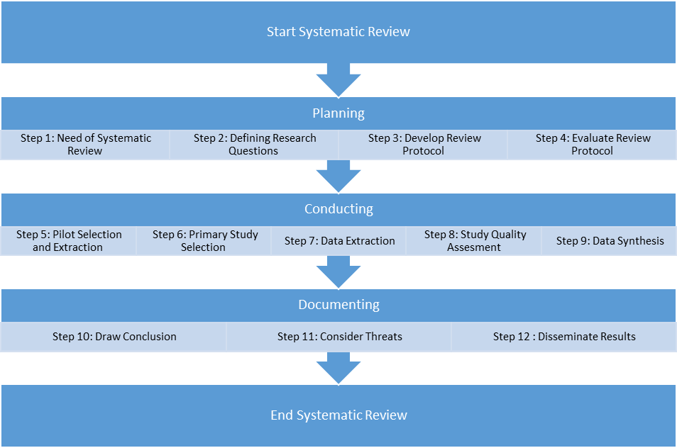

1 Introduction
Software development organizations are professional business firms, which are founded so as to develop high quality software products that satisfy the customer expectations and their business objectives. In these organizations, valuable robust and reliable software products are produced as a result of the development teams following an appropriate development process. Software product development may require an extensive development process, which includes analysis, development, testing and maintenance steps. Yilmaz states that [1, pp. 1] "A software development process is considered as the coordination of structural social activities (e.g. management, production and maintenance) coupled and constrained with a set of individuals' (i.e. participants who perform the activities) roles and skills for producing software artifacts in a predefined productivity level". Theoretically, software development process is an organized structure that has consecutive steps to produce software applications. This process is performed by small, medium or large-scaled experienced software development teams by communicating with their customers in software business companies. In other words, software development is a teamwork that requires quite effective people involvement, engagement, collaboration and motivation to accomplish the process steps, so it concerns both software developers and customers.
Since it is a human centric activity, in the course of proceedings some obstacles may occur to achieve the goals. Human factors (e.g. user motivation, engagement, communication and collaboration) are major parameters for the success of the development process. This can be investigated by understanding the human role in the software development. Individuals can affect the complexity process by being a stakeholder (e.g. customer, developer or manager, etc.) and ultimately the quality of a software product. The following are just some of the common reasons for why these problems occurred during software production: (i) lack of communication among team members that causes collaboration problems, (ii) misunderstood of business requirements and objectives from customer, (iii) late performance evaluation, (iv) lack of reward systems by the management and (v) software practitioners with insufficient technical experiences [19].
With respect to the state of the art as described the idea is to use game elements to engage, motivate, train and monitor all the employees [20] to make them passionate to involve them in the whole development process in the context of software business landscapes. The gamification broadens a new horizon almost all areas in the non-game contexts. Its description has been made with the following statement: "gamification is the use of game design elements in non-game contexts." [4, pp. 2]. In gamified contexts, a rewarding mechanism frequently exists to encourage people and excite people's attention to increase the engagement. If gamification applied to the software development it might bring several advantages. From employee perspective, because of its rewarding mechanism to increase engagement, awareness, motivation and collaboration issues. From managers' perspective, it may also have advantages for the performance management to monitor the development team members.
The application of game elements in the context of software business landscapes is still not an obvious issue and needs research and experiments on it. Therefore, this study investigates the applicability of the use of game elements in the context of software business landscapes and how these game elements affects the quality of software development in software business landscapes in order to overcome the challenges in the software industry.
The purpose of this research is to investigate the use of game elements in the context of software business landscapes. To summarize, this paper aims to address the following research questions: i). What is currently known about people's motivation, engagement and performance issues of software development process? ii). Which game elements and gamification approaches can be applied into software business landscapes to increase the quality and performance of software development? iii). What are the examples of these approaches for the software industry? iv). How these approaches affect the quality of software development in software business context?
The paper is structured as follows: Section 2 presents background information about gamification and software development process. Section 3 presents the research methodology about how the systematic literature review was planned. Section 4 presents the analysis and results that are obtained from the study. Section 5 discusses the future work and concludes the paper.
2 Background
In this section background information about the related topics will be presented. In first, we provide brief information about gamification.
2.1 Gamification
The term gamification is defined in [4, pp. 2] as "using game design elements in non-game contexts to motivate and increase user activity and retention". As it is clearly stated in its definition gamification uses game design elements to gamify environments and ultimately aims to change people's behavior in positive manner and keep engaged and motivated them in particular tasks in non-gaming environments such as workplaces, schools or in software development organizations. By the increase in the application of real life examples of gamification in different domains, the popularity and usage of it has been growth in the last years. One of the domains where gamification is popular is education and mostly for training purposes [7]. The goal is to increase the motivation, engagement and productivity of students. Gamification has also been used to maximize the user engagement and keep user motivated by entrepreneurs, customer oriented web site owners [8]. StackOverflow [9] is a good an example where the game elements are intensely used. This web site is a knowledge exchange system for developers where users take badges or performance rates according to their activities in particular actions. Because of its effectiveness and efficiency, game design elements have also been applied in business environments to improve employee's performance while they accomplish their tasks and works [10].
2.2 Gamification and Software Development Process
This study focuses on the applicability of the gamification in software business landscapes and how these game elements affect the quality of software development process in software business landscapes in order to overcome the challenges in the software industry. Thus, this makes gamification a promising field to overcome the challenges related to human factors such as people involvement, engagement, collaboration and motivation throughout software development process. Due to the above stated reasons, some software development process tools have started to integrate to game elements to benefit from gamification principles. Visual Studio Achievements [11], JIRA Hero [12], PropsToYou [13], ScrumKnowsy [14], MasterBranch [15], RedCritter [16] are examples of commercial tools that are offering gamification in software development landscapes. Therefore, researchers and practitioners recognized that the game elements could be applied to the software business landscapes. However, the applicability of this issue is not obvious so it needs some research on it. Thus, a lot of proposals and academic researches about the topic have been published. In this paper, a research approach is proposed for understanding all following effects to improve the quality of a software development process by conducting a systematic literature review.
3 Research Methodology
We conduct a Systematic Literature Review (SLR) to identify a group of papers that discuss the application of game elements in software development landscapes. A systematic literature review is a research methodology to find out what we know and what we do not know based on the focused research questions. "As a research area matures there is often a sharp increase in the number of reports and results made available, and it becomes important to summarize and provide overview." [2, pp. 1] Therefore, systematic literature reviews should certainly contain the question that it tries to answer and should report fully on the methods that have been utilized. According to Kitchenham, "Systematic Literature Review is a means of identifying, evaluating and interpreting all available research relevant to a particular research question, or topic area, or phenomenon of interest." [3, pp. 1] As described, the word systematic stands for planned, methodical acting and review stands for critical appraisal of works.
This planned and methodical literature review is conducted by carrying out these steps. The Figure 1 shows the Systematic Literature Review process and steps. These steps are briefly explained below:
- Planning: It is the first step of the review where the need for review needs to be identified, research questions are identified, and a review protocol is developed and evaluated.
- Conducting: It is the second step of the review which includes the following sub steps: Primary study selection, the data extraction, study quality assessment, and the data synthesis where the obtained data are synthesized.
- Documenting: It is the last step of the review to report the dissemination of information by drawing a conclusion and considering threats.

Hence, the systematic literature review is used to review the primary studies to find out the answers about the research questions and observe the results. As Petersen [2] states SLR uses existing studies related to research topic describes the context and summarize the results. Kitchenham [6, pp. 3] explains the reasons why systematic literature review is conducted:
- "To summarize the existing evidence concerning a treatment or technology e.g. to summarize the empirical evidence of the benefits and limitations of a specific agile method.
- To identify any gaps in current research in order to suggest areas for further investigation.
- To provide a framework/background in order to appropriately position new research activities."
By this systematic literature review the existing proposals and research works for applying game elements into software development process in software business landscapes are determined, analyzed and classified to attempt to answer the questions and report them clearly for future research. While conducting this review, recommendations in [3, 17] are followed to make the review better and decide the best solution for the investigation. This section continues with describing search strategy and definition of research questions, identification of inclusion and exclusion criteria, searching relevant studies, extracting data and, at the end, synthesis of the study.
3.1 Research Questions, Data Sources and Search Strategy
Depending on the systematic literature review principles [3], in this step, some research questions are established for this study to find answers from existing research work and proposals related to application of game elements to software development process in the context of software business landscapes. Research questions are related to applicability of the use of game elements in the context of software business landscapes and how these game elements affect the quality of software development in software business landscapes in order to overcome the challenges in the software industry. Different perspectives for applying game elements into software business landscapes are considered and associated with each research question separately. The research questions and their aims for this systematic review are described in Table 1.
| ID | Question | Aim |
|---|---|---|
| RQ1 | What is currently known about people's motivation, engagement and performance issues of software development process? | To identify which factors affects the people's motivation, engagement and performance during the software development process. |
| RQ2 | Which game elements and gamification approaches can be applied into software business landscapes to increase the quality and performance of software development? | To determine which game elements and gamification approaches can be applied to software business landscapes to enhance the success stories by increasing the quality and performance of software development. |
| RQ3 | What are the examples of these approaches for the software industry? | To show the applied approaches in the software industry. |
| RQ4 | How these approaches affect the quality of software development in software business context? | To determine which approaches remedy the software development process quality. |
These research questions are going to be guide for the data extraction phase and it helps to avoid reading full text of current research works related to the review. By the help of the research question that are stated above we focused on how game elements and mechanics remedy to increase the quality of software development process. During this review we reviewed the current research works and inspected how they focus on the gamification and software development process. Moreover, we observed other papers' proposals and approaches to find the efficient and effective solutions. For example, Research Question 1 (RQ1) focuses on investigation of identification for which factors affects the people's motivation and performance during the software development while Research Question 2 (RQ2) focuses on which game elements and gamification approaches or game elements such as badges, points award mechanisms can be applied to software business landscapes to enhance the success stories and increase the motivation of the people of the software development process. In Research Question 3 (RQ3) we identified the real life examples that adopts the gamification technique to their software development process. And finally, in Research Question 4 (RQ4) we observed how these approaches affect the quality of software development process in the industry. To get a clear picture of current research and to find the answers to research questions, popular and reliable data sources are used to carry out this review. The search strategy included the academic electronic databases and Google Search is used for including extra publications and contributions for this study. The following academic electronic databases are used in this review:
- Çankaya University Electronic Database
- IEEE Explore
- Science Direct
- Access Engineering
- ACM Digital Library
- SpringerLink Journals
To find the answers to conduct this review using the electronic data sources some special combinations, keywords and search strings are designed. To design the search strings, the following keywords are used as major terms: Software Development Process and Game Elements. This search string is designed according to steps which are stated in [18] and all these terms related to this review topic is combined using Boolean AND or OR operator to retrieve the articles that are only related to this topic. The search string that is used in this review study is indicated in Table 2.
| Major Terms | Alternative Terms |
|---|---|
| Software Development Process | ((software development) OR (software engineering) OR (software process) OR (software development phases) OR (software development lifecycle) OR (software planning) OR (software testing) OR (software analysis) OR (software maintenance) OR (software design) OR (software quality) OR (software configuration management) OR (software validation) OR (software verification)) AND |
| Game Elements | ((gamification) OR (gamifying) OR (gamify) OR (gamification mechanisms) OR (game mechanics)) |
These keywords and search strings are built up based on the research questions to get as many papers possible. Also, the alternative keywords and terms are added to major terms (shown in Table 2. Search strings for this Systematic Literature Review) to retrieve and cover more papers from the stated electronic databases. These search strings are applied to title, abstract and keywords to get the results. The Table 3 is presented to summarize the search strategy which is described above.
| Category | Details | |
|---|---|---|
| Data Source | Academic Search: |
|
| Non-Academic Search |
|
|
| Items |
|
|
| Search Applied to |
|
|
| Language |
|
|
| Publication between |
|
|
3.4 Study Selection Criteria
Study selection criteria describe the inclusion and exclusion standards whether to include or not the existing research works and proposals depending on the research questions, search string and strategy when conducting a systematic literature review. Therefore, a search result must meet the constraints that are defined in inclusion and exclusion standards. Thus, the inclusion standards include the search result whereas the exclusion standards eliminate the search result in the review.
The inclusion and exclusion criterion need to be defined to increase to more reliable results and decrease the risk to stray away from the topic. In other words, study selection criteria are designed and used for processioning for the review. Thus, this enables other researchers to rework by carrying out review using the same standards. When defining the study selection standards some criterion should be followed. The inclusion criteria should not be too general or too strict. When it is too general, the poor quality studies may be included and it affects the final results. On the other hand, when it is too strict, the entire related studies might not be presented in the final result. For this study, the inclusion standards are defined to get clear and reliable results. Studies are eligible for inclusion in the review if they presented empirical data on software development that are used game elements in their business context. In addition, the studies which are related to human factors (e.g. user motivation, engagement and collaboration, etc.) in software development are included to study selection criteria. Therefore, only academic papers and publications, professional forums and contributions such as conferences, online publications and book sections which related to this review domain are included to inclusion standards. Moreover, publications between 2010 and 2017 and only written in English is considered as the part of inclusion standards. On the other hand, according to search results from search strings, the search results including irrelevant data are excluded for this systematic review. Also, non–academic results, people opinions, personal blogs and personal web pages from the search results are excluded for this study. The review also excluded the academic results that meet the following criterion: duplicate papers that are retrieved from different databases, the papers available with only its abstracts, papers related to gamification of other domains (education, health, etc.)
The Table 4 presents the study selection criteria that are used in the review.
| Criteria Type | Details |
|---|---|
| Inclusion Criteria |
|
| Exclusion Criteria |
|
| Exclusion Criteria for full text |
|
4 Results
We made our research using systematic literature review methodology by following the recommendations that are explained in [3, 17]. In first we developed search strings, identified data sources and decided study selection criteria, which are described in detail in Section 3. At the end, by following this search strategies we accessed and examined a lot of research work extracted the irrelevant data related to topic and collect the results to address the research questions. Table 5 shows the search results of each steps of the review process. As a result, number of 12 studies were obtained and these primary studies are listed in Appendix A section.
| Step | Process | Number of Papers |
|---|---|---|
| Step 1 | Search, obtain data | 1093 |
| Step 2 | Data extraction, reading keywords, title or abstract parts | 64 |
| Step 3 | Reading full text paper | 33 |
4.1 Analysis Results of Research Questions
In this section we made an analysis to answer the research questions using the data that we obtained while conducting this review.
| Research Questions | Result |
|---|---|
| Research Question 1 (RQ1): What is currently known about people's motivation, engagement and performance issues of software development process? | User involvement plays a crucial role in software development process Therefore; the lack of user involvement affects the software development process in negative manner. Efficient and effective user involvement and user engagement requires high motivational aspects to increase the performance issues related to human factors. [A3] and [A12] propose that using game elements and mechanics increases the user involvement by increasing the user motivation, engagement and collaboration issues. As performance issues considered in software development, an explicit analysis is a key factor. Therefore, in their proposals in [A12] collaborative environment with team members and also stakeholders are important for better understanding to produce a well-understood software product. To build a collaborative environment this study proposes to use game elements such as ranking systems and badges. In [A3] researchers show the reward mechanism in software development to increase performance. |
| Research Question 2 (RQ2): Which game elements and gamification approaches can be applied into software business landscapes to increase the quality and performance of software development? | We use this research question to determine which game elements and gamification approaches can be applied into the software development process in software business landscapes to enhance the success stories by increasing the quality and performance of software development. We classify and examine the primary studies that are about using game elements and mechanics. High-level motivation of team members causes to increase the quality of software development. In [A7], using game elements (rankings, badges, etc.) strengthens motivation of people; thus, it fosters to increase the quality and performance of software development. Human related issues affect the quality and performance of development process. In [A10], researchers propose that using game elements as a solution to fix the human related obstacles maximizes the quality of development process. Moreover, according to the analysis [5, 21, 22] that we made, we identify the following game elements and mechanics [A1], [A2] [A4], [A8], [A11] that may be applied into the software business landscapes to increase the quality and performance of software development process.
|
| Research Question 3 (RQ3): What are the examples of these approaches for the software industry? | We choose this research question to show and exemplify the applied approaches in the software industry. In this research question, we focused on the real-life examples in which gamification elements are used. In [A3] they present an online gamified tool which mainly uses reward mechanism as a game element to conduct the requirement elicitation process. Results show that it has positive impacts on people such as increasing motivation, engagement and collaboration. In [A4], the usage of gamification elements increases motivation and performance of the team members in Visual Studio platform. Also in [A4], they show the positive impacts of gamification on software development process by presenting real-life gamified applications which are iThink (for requirement), CodeHunt and Visual Studio Achievements (for software development) and Microsoft Language Quality Game (for testing). All these approaches have positive impacts on development process. Therefore, we have observed that some glorious version tools and source controls as JIRA [11], RedCitter [12], Visual Studio Achievements [16] in the industry. These examples use some basic game elements such as badges, levels and award mechanisms so as to monitor and evaluate the performance of each team member. Hereby the most productive team member could be determined and may also rewarded. |
| Research Question 4 (RQ4): How these approaches affect the quality of software development in software business context? | We choose this research question to determine which approaches remedy the software development process quality. Software development process requires people involvement, user engagement, collaboration and motivation. In [A3] and [A12] it is stated that gamification in software development overcome the user involvement problem. In [A12], gamification provides a collaborative environment by voting and ranking mechanisms. In [A9], they present a case study in which gamification is applied. From the results, they claim that applying game elements increases the performance of software development actors so it enriches the quality of development process. In [A1], [A4] and [A11] using game elements such as rewarding mechanism increases the performance and quality of the development process. Dorling and McCaffery [A6], argue that the adoption of gamification in software development causes the process quality improvement. In their example [A5] using gamification dynamics in a bug tracking system overcomes the human factors and increases quality of software development process. |
5 Conclusion
In this paper, we conducted a systematic literature review to classify and characterize the state of the art as regarding applying game elements into software development process. Firstly, we made a deep literature research by using the search strings that we developed at the beginning of the literature review to address each research questions to reach the goal. After we accessed data sources to show the applicability of gamification into software development process we performed a data inclusion and exclusion process to reach the goal. After this process, we classified primary studies according to their properties, which were their process areas, kind of game elements and mechanics that are applied in their studies and further discussed their effects. Moreover, we analyzed some empirical evidences (i.e. real life examples) to see the impacts of game elements on user motivation, engagement and collaboration to encourage the business organization to replace the current development process with the proposed methodology.
The results that we obtained from our preliminary investigation on applying game elements into software business landscapes provides a basic guidance for the software development organizations which aims to benefit from gamification. At the beginning of this literature review, we envisioned that using gamification in software development process should reduce the problems related to human factors (e.g. user motivation, engagement and collaboration, etc.). Thus, the results that we obtained from our research confirmed that using game element in this area supports our expectations. In addition, our results suggest that using gamification in software development increases the user motivation, engagement and collaboration. It also proves that it improves the software development process in terms of quality and performance, which creates a potential to resolve some obstacles related to human factors [5,21,22]. However, most of the studies that we analyzed show that there are some gaps in the areas such as project management and team configuration. In studies based on real life examples [23,24,25], the adoption of gamification approach into software development process provides some concrete but preliminary evidence. Therefore, it shows that it can be partially adopted into software development from a software management perspective.
Moreover, from the analyzed results, we have observed that applying game elements into other business domains such as marketing, education is going faster than software development. However, our results suggest that if the number of proposals, empirical studies and evidence increases for the adoption of gamification into software development to make the whole process better, it may complement the existing ecosystem of software development process.
Appendix A
[A1] Yilmaz, M., Yilmaz, M., O'Connor, R., Clarke, P. A gamification approach to improve the software development process by exploring the personality of software practitioners. In: Clarke, Paul and O'Connor, Rory and Rout, Terry and Dorling, Alec, (eds.) Software Process Improvement and Capability Determination. Communications in Computer and Information Science, 609. Springer, pp. 71-83. ISBN 978-3-319-38980-6
[A2] Kosa, M., Yilmaz, M. Designing Games for Improving the Software Development Process. Systems, Software and Services Process Improvement, 22nd European Conference, EuroSPI 2015, vol. 543, pp. 303–310, 2010.
[A3] Fernandes J., Duarte, D., Ribeiro, C., Farinha, C., Pereira, J. Madeiras, and Mira da Silva, M. "iThink: A Game-Based Approach Toward Improving Collaboration and Participation in Requirement Elicitation," Procedia Computer Science, vol. 15, pp. 66–77, 2012.
[A4] Lombriser, Philipp and Valk, Ronald van der. Improving the Quality of the Software Development Lifecycle with Gamification. Department of Information and Computing Sciences, Utrecht University.
[A5] S. Tomasso Dal, M. Andrea, L. Michele, M. Ebrisa. How to Gamify Software Engineering. 2017 IEEE 24th International Conference on Software Analysis, Evolution and Reengineering (SANER), 261 – 271.
[A6] Dorling, A., McCaffery, F., "The gamification of SPICE," Communications in Computer and Information Science, vol. 290, pp. 295–301, 2012.
[A7] Herranz, E., Palacios, R. C., de Amescua Seco, A., & Yilmaz, M. (2014). Gamification as a Disruptive Factor in Software Process Improvement Initiatives. J. UCS, 20(6), 885-906.
[A8] Yilmaz, M., O'Connor, R., Collins, J. Improving software development process through economic mechanism design. In: 17th European Software Process Improvement Conference, 1-3 Sept 2010, Grenoble, France. ISBN 978-3-642-15666-3
[A9] Passos, Erick B, Danilo B Medeiros, Pedro AS Neto and Esteban WG Clua. Turning Real-World Software Development into a Game. Games and Digital Entertainment (SBGAMES), 2011 Brazilian Symposium on, IEEE. 2011.
[A10] Yilmaz, M and O'Connor, R. (2010) Maximizing the value of the software development process by game theoretic analysis. In: 11th International Conference on Product Focused Software, 21-23 Jun 2010, Limerick, Ireland. ISBN 978-1-4503-0281-4
[A11] A. A. de Melo, M. Hinz, G. Scheibel, C. D. M. Berkenbrock, I. Gasparini, and F. Baldo, "Version Control System Gamification: A Proposal to Encourage the Engagement of Developers to Collaborate in Software Projects," presented at the Proceedings of the 6th Int. Conf. on Social Computing and Social Media (SCSM'2014).
[A12] D. Duarte, C. Farinha, M. M. da Silva, and A. R. da Silva, "Collaborative Requirements Elicitation with Visualization Techniques," presented at the Proceedings of the IEEE 21st International Workshop on Enabling Technologies: Infrastructure for Collaborative Enterprises (WETICE'12), 2012.